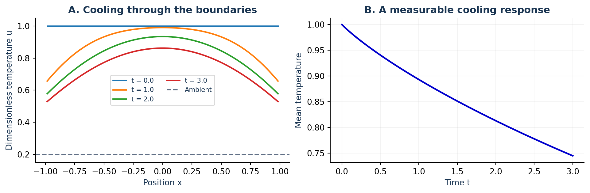
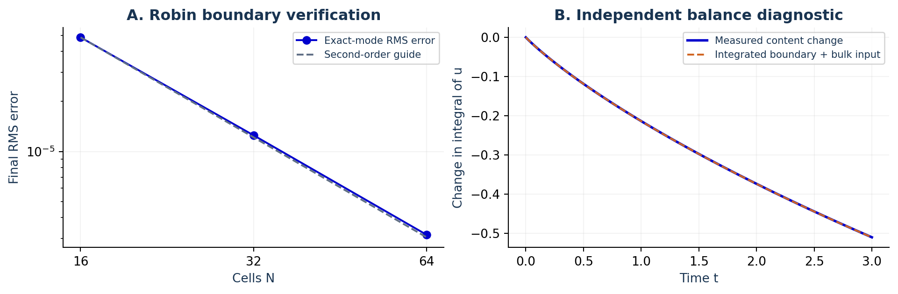
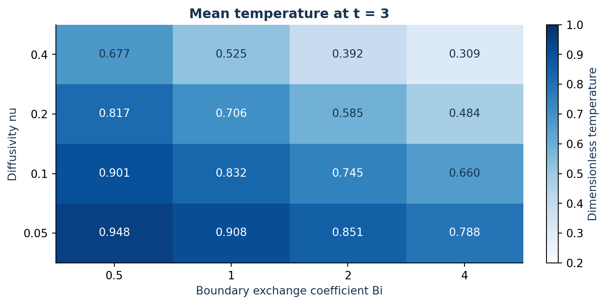
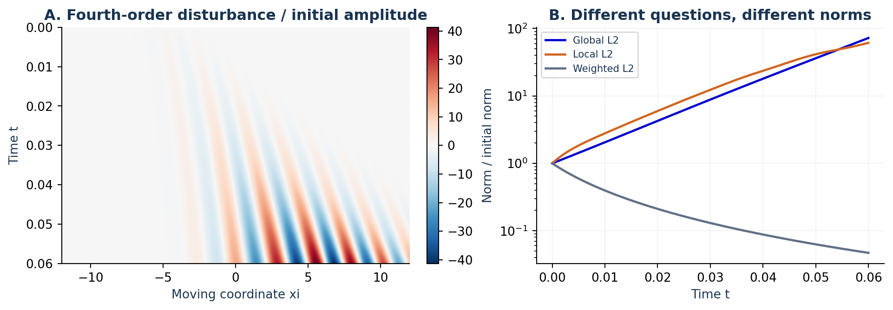

Model editor
Set equations, initial data and boundary conditions.
Define equations and boundary conditions, animate solutions, compare numerical accuracy and export your results.
Temperature over time · fixed scale
Set equations, initial data and boundary conditions.
Compare grid sizes and time steps.
Save parameters, solution fields and diagnostics.
Compare diffusion and boundary heat exchange in a rod with Robin boundary conditions.

Dimensionless example: initial temperature 1, ambient 0.2, diffusivity 0.1, boundary exchange 2. At t = 3, the computed mean is 0.74486.
Define a final mean, a local probe or a threshold event. Check whether the thermal-content change matches the recorded boundary and bulk input.
The model uses dimensionless temperature and a sudden change in boundary conditions.
Open this cooling model →
Run three-level studies, isolate space from time refinement, and export an inspectable experiment record.
Measure front motion, align profiles and compare local, global and weighted responses.
Map a chosen observable and replay any completed cell. Failed runs and missing events remain visible.


One to three fields; 1D/2D periodic models; supported second-order bounded problems with Dirichlet, Neumann or passive Robin conditions; 1D fourth-order problems with two configurable linear boundary rows at each end.
Simulations run locally in your browser.
Read the supported numerical scope →